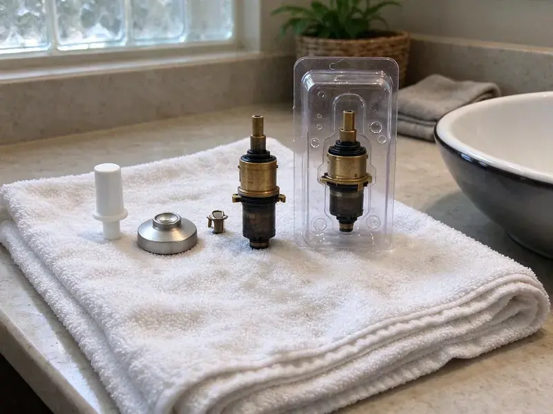

Toilet Repair in Glendale, CA
Dealing with a leaking or clogged toilet in Glendale, CA? FKM Plumbing provides prompt, professional toilet repair services.
- Guaranteed Workmanship
- Licensed Plumbers
- Upfront Pricing
- Fill and Flush Valves On Hand
Need Toilet Repair Right Now in Glendale, CA?
Tell us what your toilet is doing and we will give you a firm price before any work starts.
Expert Toilet Repair Services in Glendale, CA
FKM Plumbing handles every kind of toilet repair, from a flapper that will not seal to a base leak that is soaking the subfloor. Our plumbers test the fill valve, flush valve, supply line and closet flange so the fix holds instead of buying you a few weeks. Many repairs are finished in under an hour with parts we carry on the truck.
Our expertise includes:
- Clearing tough toilet clogs
- Diagnose and fix all toilet leaks.
- Clear stubborn toilet clogs quickly.

Additional Bathroom Plumbing Services in Glendale, CA
From toilets to showers, our bathroom plumbing team in Glendale, CA handles repairs, installs, and upgrades with tidy, code-compliant work.


Customers
Why Choose FKM Plumbing for Toilet Repair in Glendale, CA?
Our trucks carry universal and brand-specific parts for Kohler, American Standard, TOTO, Gerber and more. That means most toilets are fixed on the spot with the right part instead of a close-enough substitute.
- Parts On Hand, We stock fill valves, flappers, flush valves, seals and supply lines for most common toilets.
- Leak Testing, We dye-test the tank and check the base so silent leaks do not get missed.
- Quality Parts, We use only dependable, high-quality toilet components for lasting repairs.
Citywide Coverage
Whether you live near downtown Glendale or out on the edge of town, we can usually schedule toilet repair the same day. We bring the same stocked truck and the same flat-rate pricing to every neighborhood.
Experienced Team
Our plumbing team has broad experience with the common toilet issues homeowners face, including problems related to hard water and older plumbing systems. We are continuously trained on the latest repair techniques and toilet technologies.
Safety-First Approach
All repairs follow plumbing code for supply connections, flange attachment and fixture mounting. We replace corroded bolts and brittle supply lines rather than keeping parts that could fail and flood a bathroom.
Trusted Certified Glendale Plumbing Services Professionals
At FKM Plumbing, we take pride in providing certified plumbing services throughout Glendale, CA. Backed by recognized industry credentials, our experienced plumbers combine technical skill with genuine customer care. Whether it is repair, installation, or maintenance, we follow strict safety and quality standards to deliver lasting results you can trust.
Call Us Now PHCC Plumbing Contractor Recognition
PHCC Plumbing Contractor Recognition Better Business Bureau (BBB) Accreditation
Better Business Bureau (BBB) Accreditation Angi Certified Pro
Angi Certified Pro ISO 9001 Quality Management Certification
ISO 9001 Quality Management CertificationProfessional Toilet Repair Services in Glendale, CA
Emergency Toilet Repair in Glendale, CA
A badly clogged or overflowing toilet can be an emergency, especially in a one-bathroom home or a busy commercial setting. When you have a toilet crisis in Glendale, CA, FKM Plumbing offers rapid response emergency services to prevent water damage and restore functionality. We're equipped to handle urgent issues like severe clogs, burst supply lines, or toilets that won't stop running, providing immediate relief and lasting repairs.

Commercial Toilet Repair in Glendale
Commercial toilets often see heavier use and require specialized parts and expertise for repair. FKM Plumbing offers complete toilet repair services for businesses and commercial properties throughout Glendale. We understand the importance of minimizing downtime for your restrooms and provide efficient, durable repairs for flushometer toilets, low-flow models, and standard commercial units, ensuring your business operations run smoothly.
Clogged Toilet Solutions in Glendale, CA
Stubborn toilet clogs are a common nuisance in Glendale, CA homes, often caused by non-flushable items or excessive toilet paper. While a plunger can clear minor blockages, persistent clogs indicate a deeper issue in the trap, drain line, or even the main sewer line. Our plumbers use professional-grade augers and hydro-jetting equipment to safely and effectively clear even the toughest clogs without damaging your toilet or pipes. We also inspect for potential causes like root intrusion or pipe corrosion, which are sometimes seen in older homes.
Weak Flush and Clog Repair in Glendale, CA
If your toilet needs two flushes or clogs often, the problem may be scale in the rim jets, a partial blockage in the trapway or a flush valve that does not open fully. We auger the trap, check the vent if gurgling is present and clean the jets with a descaling treatment. Some low-flow toilets from the 1990s simply flush poorly, and we will tell you honestly if replacement is the better fix.
Toilet Flush Mechanism Repair in Glendale, CA
If your toilet isn't flushing properly, it could be due to issues with the flush chain, handle, flapper, or fill valve. A weak flush may mean the tank isn't filling correctly, while a loose handle might not be engaging the flapper. Our plumbers are adept at diagnosing these internal tank problems, replacing worn or broken components like flush valves, fill valves, and toilet handles to restore full and effective flushing power.
Brands We Service in Glendale, CA
FKM Plumbing is experienced in repairing toilets from all leading manufacturers commonly found in Glendale, CA homes and businesses. This includes popular brands like Kohler, American Standard, Toto, Delta, Eljer, and Gerber. Our plumbers are familiar with the specific designs and proprietary parts of these brands, allowing for accurate diagnosis and fast repair. We stock a wide range of common replacement parts to ensure that most repairs can be completed on the first visit, regardless of your toilet's brand or model.
Fill Valve Replacement in Glendale
A noisy, slow or hissing tank usually points to a worn fill valve. Mineral scale clogs the small ports inside, which causes long refill times and phantom refills in the night. We replace old ballcock valves with modern adjustable fill valves from Fluidmaster or Korky and set the water level to the manufacturer mark. The job takes about 20 minutes and makes an older toilet noticeably quieter.

Toilet Tank and Bowl Crack Repair in Glendale
Cracks in a toilet tank or bowl in Glendale can lead to serious water leakage and require immediate attention. While small hairline cracks might be temporarily sealed, larger or structural cracks often require replacement of the affected component. Our technicians assess the severity of the crack and advise on the most cost-effective and durable solution. We can perform precise tank or bowl replacements, ensuring a watertight seal and proper function, preventing further water damage to your flooring or subfloor.
Toilet Repair Near Me in Glendale, CA
Our commitment to the local community means we understand the specific plumbing needs and challenges in Glendale. You can count on FKM Plumbing for reliable, convenient toilet repair services right in your area, delivered by experienced professionals who know the area well.
When you search for 'toilet repair near me' in Glendale, CA, you want a trusted local expert who can respond fast. FKM Plumbing is located to serve the entire Glendale area, ensuring that our plumbers can reach your home or business promptly. We pride ourselves on providing efficient, neighborhood-focused service.
FKM Plumbing at a Glance
- Fully licensed plumbing team covering Glendale, CA
- 24/7 emergency service with same-day scheduling
- Upfront, flat-rate pricing before work begins
- 4.8-star rated by 754+ Southern California customers
Glendale Map
Glendale Information
- Population
- 187,050
- Area codes
- 818/626/323
- Service area
- Glendale and communities within 40 miles
- Nearby
- Pasadena, Alhambra, East Los Angeles, El Monte
Toilets in Glendale homes can run into wax ring failures or mineral buildup on internal parts over time. Municipal water across much of Southern California is hard, leaving white scale on faucets, showerheads, and inside water heater tanks. That is why timely and effective repair matters.
Expert Services
Trust our professionals for reliable FKM Plumbing solutions in Glendale, CA.
Our Specialized Plumbing Services in Glendale, CA
At FKM Plumbing, we provide a complete range of plumbing services across Glendale, CA. From leak detection to full system installations, our team ensures fast, precise, and affordable service for both residential and commercial properties. Explore our core services below:


How Our Toilet Repair Process Works in Glendale, CA
At FKM Plumbing, we follow a consistent, step-by-step process for every toilet repair to guarantee quality results for our Glendale, CA customers.
Request a Quote
Call (213) 871-0701 or fill out our online form to schedule your toilet repair service. We'll gather initial details about your issue and arrange a convenient appointment time.
Expert Diagnosis
Our skilled plumber arrives on time, performs a thorough inspection of your toilet, and accurately diagnoses the problem. We use professional tools to pinpoint leaks or blockages.
Clear Estimate
Before any work begins, you'll receive a detailed, upfront estimate for the repair. We explain the recommended solution and answer all your questions.
Frequently Asked Questions About Toilet Repair in Glendale
The cost of toilet repair in Glendale, CA can vary a lot depending on the issue. Minor repairs like replacing a flapper might range from $120 to $250, while more complex issues such as main drain clogs or wax ring replacements could be between $200 and $500. We provide a clear, upfront estimate after diagnosing the problem.
Generally, basic toilet repairs like replacing internal tank components, fixing a leak, or clearing a clog do not require a permit in Glendale, CA. However, if the repair involves altering the drain line, relocating the toilet, or making major changes to the plumbing system, a permit might be necessary. We can explain permit requirements for your specific situation.
Yes, even small, steady toilet leaks can cause significant damage over time. Water can rot wood subflooring, degrade grout, warp tiles, and encourage mold growth. If left unaddressed, a leaking toilet can lead to costly structural repairs and health hazards.
Common signs include a toilet that runs constantly, a weak or incomplete flush, water leaking around the base, a rocking or unstable bowl, or a visible crack in the porcelain. Any unusual noises, like gurgling or whistling, can also point to an internal issue that needs attention.
Weak flushing can be caused by several issues, including insufficient water in the tank, a clogged rim jet, a partially closed stop valve, or a partial clog in the drain line. Our plumbers can diagnose the precise cause and restore full flushing power.
Absolutely. A constantly running toilet can silently waste hundreds, if not thousands, of gallons of water per month. Even a small leak can add up dramatically on your water bill over time, making prompt repair a wise financial decision.
Most standard toilet repairs, such as replacing a flapper, fill valve, or wax ring, can be completed within one to two hours by an skilled plumber. More complex issues like clearing a deep clog or diagnosing intermittent problems might take a bit longer, but we strive for efficiency.
To prevent future toilet problems, avoid flushing non-biodegradable items, use appropriate toilet paper, and address small issues like a running toilet promptly. Regular plumbing maintenance and annual inspections can also help identify potential problems before they escalate.
What People Are Saying About Our Plumbing Experts?

Robert G.
The trenchless sewer replacement saved our front yard. They walked us through the camera inspection footage first so we knew exactly what we were paying for.
Sewer Line Replacement · Glendale, CA
Sofia M.
Two new toilets installed in one visit, no mess left behind, and the tech even adjusted a faucet he noticed was dripping. Fair pricing and really friendly.
Toilet Installation · Los Angeles, CA
Patricia H.
We had a slab leak that two other companies could not find. FKM Plumbing located it in under an hour, explained our options, and the price matched the quote to the dollar.
Slab Leak Repair · Los Angeles, CAJames P.
Our commercial plumbing system had a leak under the sink, and FKM Plumbing handled it professionally. The plumbers arrived quickly and restored everything without disruption to our customers.
Commercial Plumbing · Glendale, CA
Mark T.
When our office needed drain cleaning, FKM Plumbing provided quick, reliable service. The plumber arrived on time and made sure every drain flowed perfectly before leaving. Very satisfied.
Drain Cleaning · Pasadena, CA
Emily R.
I called FKM Plumbing for plumbing repair, and the technician was fast, polite, and thorough. They explained the problem clearly and fixed it the same day. I will definitely hire them again. Highly recommended!
Plumbing Repair · East Los Angeles, CA